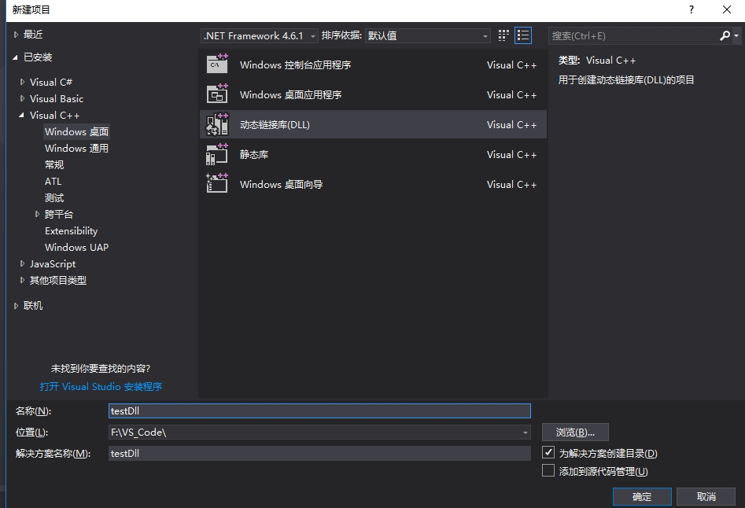
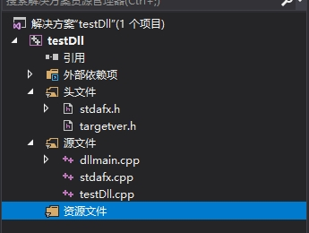
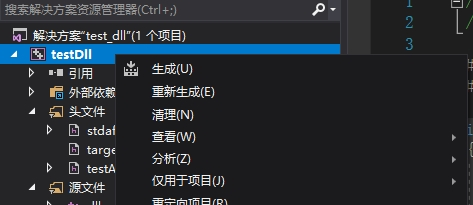

1.1 dll创建和使用
动态链接库(.dll)的生成
1.打开:"文件"-"新建"-"项目"
2.创建DLL项目

创建后的项目结构

3.实现功能接口
- 添加头文件testAPI.h
// testAPI.h _declspec(dllexport) int test_echo(int i, int(*call_back)(int a, int b)); 实现源接口testDll.cpp
int test_echo(int i, int (*call_back)(int a, int b)) { int aa; aa = i * i; call_back(i, aa); return 0; }
4.生成dll文件

到此为止dll文件已经生成.下一步介绍调用dll动态库.